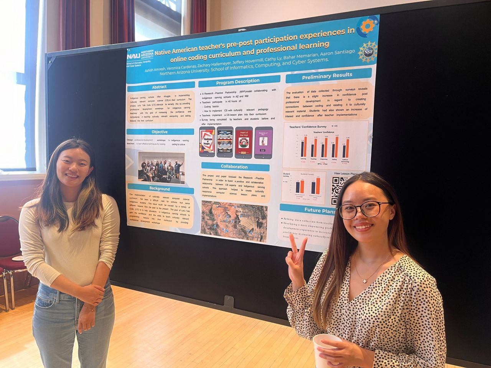
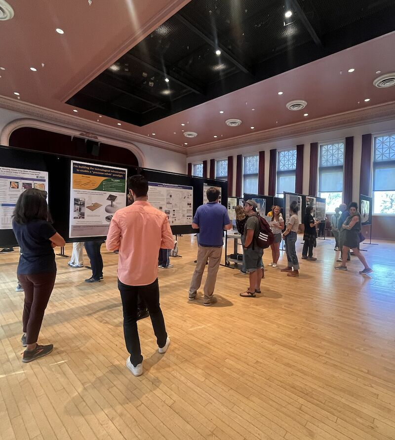

Three ways the work shows up
Consent forms are not signed. The build has no save state. Using the usability heuristic to flag friction? We are debriefing three maker-space cohorts for the workshop redesign prompted by inconsistent completion rates. Interviews have surfaced unusual patterns of hesitation in every skill tier. Assemble the findings. Look at records of the clinician shadowing. Would these signals detect confusion as well as boredom?

Maker Space Sessions
Daily workshops with 25–50 middle schoolers, built around hands-on builds instead of worksheets.
Go somewhere
Clinician Interviews
Talking to therapists about what a game-based motor-skills intervention actually needs to do.

Research Write-ups
Turning session notes and usability passes into findings worth presenting and publishing.
Go somewhere